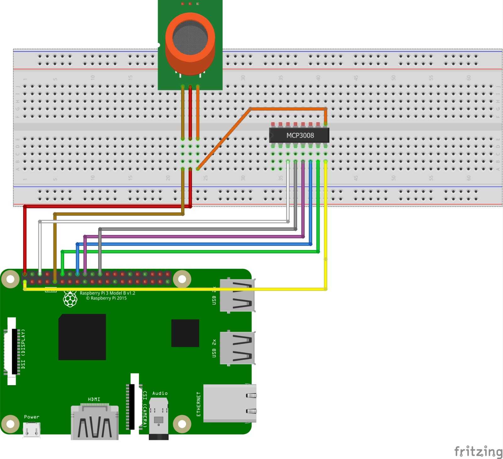
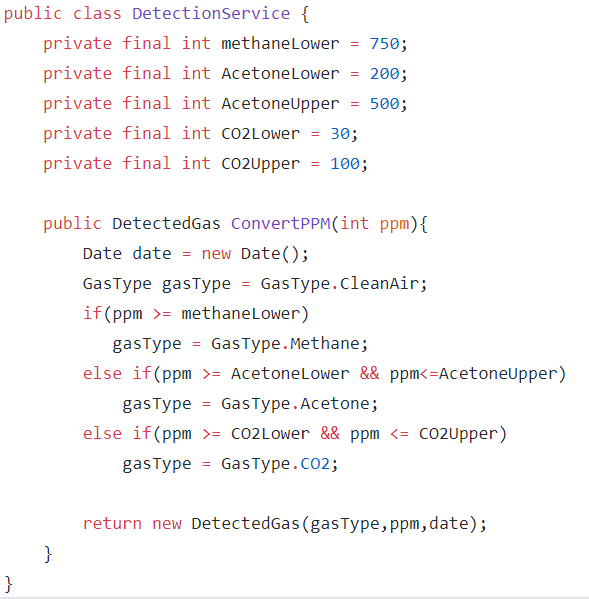
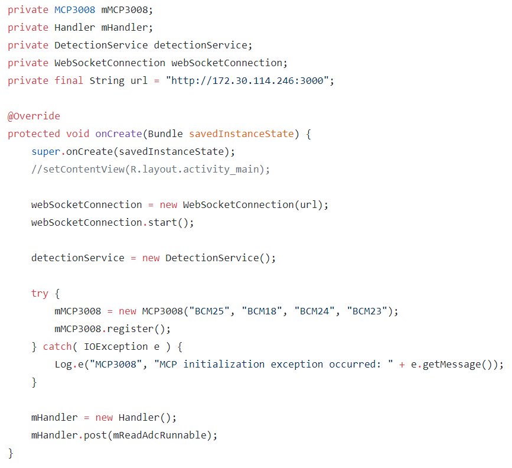
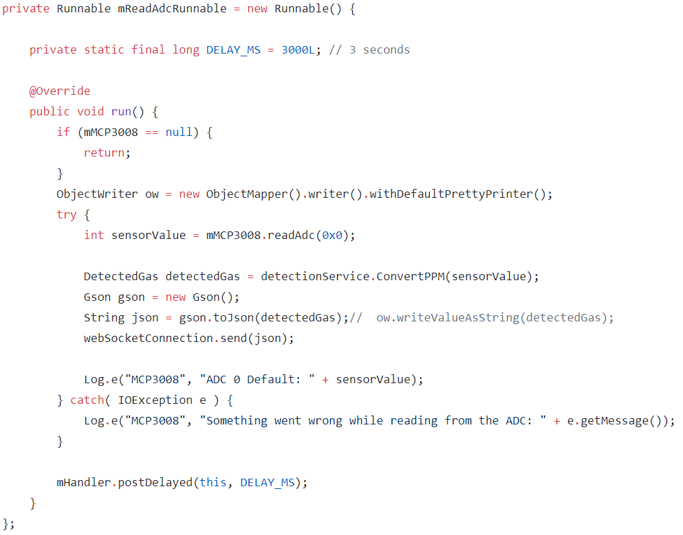
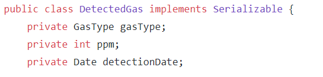
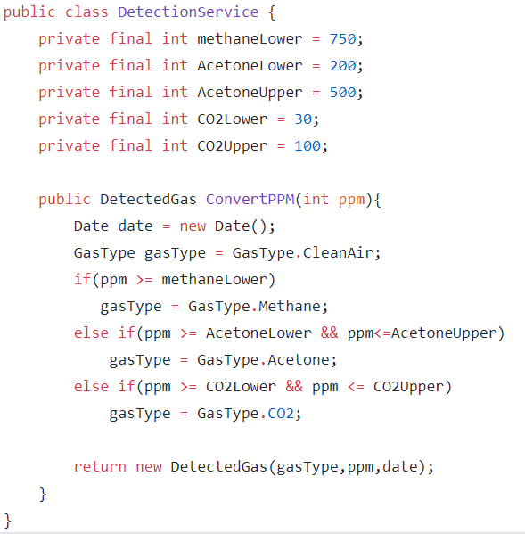

Overview
The following project's purpose is to measure the air quality, based on the quantity of various types of gas detected in the air. The captured data is sent to an Android app client which will display a line-chart with the current levels and also store some historical data sent over time.
Pre-requisites
What you will need:
Android Studio 2.2+
Raspberry Pi 3 Model B
1 breadboard
jumper wires
MQ-135 gas sensor
MCP3008 ADC (Analog to digital converter)
an USB cable
an Ethernet cable
Explanations
In order to measure the air quality we need a gas sensor.
We used the MQ-135 model which is suitable for detection of NH3, NOx, alcohol, benzene, smoke, CO2 etc.
The sensitive material of MQ-135 gas sensor is SnO2,which with lower conductivity in clean air. When the target gas exists, the sensor’s conductivity gets higher along with the gas concentration rising.
The concentration of a gas is given in PPM (parts per million). One difficulty of the MQ-135 is that a single analog value is given with which the gas content in the air has to be calculated for the supported gases.
But Raspberry Pi's GPIO pins are digital pins. So how can we process the input from MQ-135 gas sensor?
Here comes MCP3008 which is an ADC (Analog to digital converter). MCP3008 is a 10bit 8-channel ADC which uses the SPI bus protocol and allows you to get the analog inputs with Raspberry Pi. It gives you 8 analog inputs and it uses just four pins of Raspberry Pi excluding the power and ground pins.
MCP3008 is a 10 bit ADC so it will give us output up to (2 to the power of 10) = 1023. So the output will be a range from 0-1023 where 0 means 0V and 1023 means 3.3V
MCP3008 ADC has a total of 16 pins out of which 8 pins are for taking the analog input.
The analog input pins are from CH0-CH7 (Pins 1-8). On the other side, we have different pins which are as followsDGND is digital ground pin for the chip.
CS is the chip select pin.
MOSI is the data input pin from the Raspberry Pi.
MISO is the data output pin.
CLK is the clock pin.
AGND is the analog ground pin.
VREF is the analog reference voltage. Connect to 3.3V. You can change it if you want to change the scale.
VDD is the power pin for the chip.
However ,we will need just four of them: CS,CLK,MISO,MOSI.
We used the MQ-135 model which is suitable for detection of NH3, NOx, alcohol, benzene, smoke, CO2 etc.
The sensitive material of MQ-135 gas sensor is SnO2,which with lower conductivity in clean air. When the target gas exists, the sensor’s conductivity gets higher along with the gas concentration rising.
The concentration of a gas is given in PPM (parts per million). One difficulty of the MQ-135 is that a single analog value is given with which the gas content in the air has to be calculated for the supported gases.
But Raspberry Pi's GPIO pins are digital pins. So how can we process the input from MQ-135 gas sensor?
Here comes MCP3008 which is an ADC (Analog to digital converter). MCP3008 is a 10bit 8-channel ADC which uses the SPI bus protocol and allows you to get the analog inputs with Raspberry Pi. It gives you 8 analog inputs and it uses just four pins of Raspberry Pi excluding the power and ground pins.
MCP3008 is a 10 bit ADC so it will give us output up to (2 to the power of 10) = 1023. So the output will be a range from 0-1023 where 0 means 0V and 1023 means 3.3V
MCP3008 ADC has a total of 16 pins out of which 8 pins are for taking the analog input.
The analog input pins are from CH0-CH7 (Pins 1-8). On the other side, we have different pins which are as follows
Schematics

×

Code
This project consists of 3 components:
an Android IOT project using RaspberryPi
a websocket server
an Android app which is the client
 Let's take a look inside the Android IOT project which is the main component.
Let's take a look inside the Android IOT project which is the main component.
The types of gas we want to detect are: Methane, CO2, Acetone.
We need to interpret the ppm values from the ADC and set some thresholds for each type of gas.  In the MCP3008 class, we declare the GPIO pin names that we will use and the GPIO objects and register them using PeripheralManager class. To access any of the PeripheralManager APIs, you need to add the USE_PERIPHERAL_IO permission to your app's manifest file.
Now, in the MainActivity we need to setup the GPIO pins for the MCP3008 and create a connection to the websocket server.

In order to get notifications about the current levels of gases in air we will use a Runnable object which will sent data through the websocket connection every 3 seconds.

The data about the air quality is sent as a json object containing the type of gas, the ppm value and the date.

Now, we need the android client to listen on the websocket connection and display the sent data.

And also to update the ui and implicitly the live chart with the new values.


Let's take a look inside the Android IOT project which is the main component.
The types of gas we want to detect are: Methane, CO2, Acetone.
We need to interpret the ppm values from the ADC and set some thresholds for each type of gas. 
Set up and running
To get all of this running:
Connect your Raspberry to the laptop via an USB cable. This will charge the Raspberry.
Connect your Raspberry with an ethernet cable to the router. Check what IP the Raspberry received.
In a command line, enter adb connect raspberry_ip.
Run the websocket server
Run the Android IOT project and choose the Raspberry device.
Run the Android app client